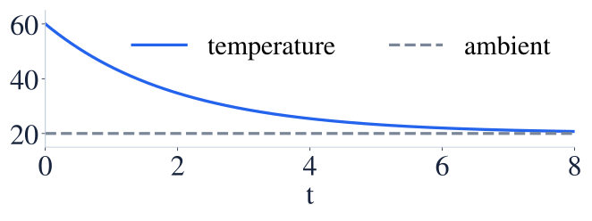

Cooling models
냉각 모형
Cooling depends on the temperature difference from a constant environment.
냉각 속도는 일정한 주변 온도와의 온도 차에 비례합니다.
Cooling depends on the temperature difference from a constant environment.
냉각 속도는 일정한 주변 온도와의 온도 차에 비례합니다.
Time is in minutes; the environment stays at 20°C.
시간 단위는 분이며 주변 온도는 20°C로 일정합니다.

The excess temperature T−20 decays exponentially toward zero.
초과 온도 T−20이 지수적으로 감소하여 0에 가까워집니다.
The equilibrium is 20, so add it back after solving the decay equation.
평형온도 20을 감소 모형에 다시 더합니다.
The coefficient is the initial temperature difference.
계수는 초기 온도 차입니다.
The temperature remains above 20 and approaches it over time.
온도는 20보다 높게 유지되며 시간이 지나면 20에 가까워집니다.
Using 60 as the exponential coefficient forgets the ambient-temperature offset.
지수항의 계수를 60으로 쓰면 주변 온도만큼의 차이를 빠뜨립니다.
Find T(ln 2).
T(ln 2)를 구하세요.